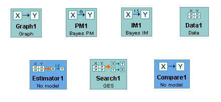

Each Box Explained |
Sessions in Tetrad are built up by placing boxes on the main workspace area, connecting them up with arrows, and building modules in each box that depending on parent modules that have already been built. (See How to Build a Session for an example. For a discussion of how arrows create dependencies between boxes, see Flowchart Dependencies.)
Boxes are things that look like this:

Each box can contain one of a specific list of modules, and which modules are available depends on what modules are in the parent boxes for that box. Here we discuss each box in particular, list the types of modules it can contain, and provide links to explanations for those modules. If you'd prefer to go directly to explanations of modules, see Each Module Explained.